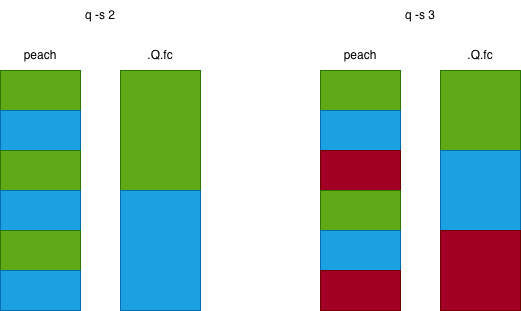

\t. \t do[1000000; til 100]
q) myVar: 0
q) .z.ts:{myVar+:1} // increase myVar by 1 when timer ticks
q) system"t 1000" // timer ticks every 1000 ms
q) system"t 0" // stop timer
.Q.w[] returns only memory of the main thread, but
.Q.gc[] works for all threads.
q -s 4 q) \s 2 1 2 3 4 5 6, and we want to plus one to each value in the list.
Suppose we have three threads.
peach - this is parallel each. q) {x+1} peach 1 2 3 4 5 6peach will allocate 1 4 to the first thread, 2 5 to the second thread, and 3 6 to the
third thread
.Q.fc - this is parallel cut. q) .Q.fc[{x+1}; 1 2 3 4 5 6].Q.fc will allocate 1 2 to the first thread, 3 4 to the second thread, and 5 6 to the
third thread.

peach, we want to make sure the 1st and 4th input together takes about the same
amount of
time as the 2nd and 5th input, and the 3rd and 6th input. .Q.fc, we want to make sure the 1st and 2nd input together takes about the same
amount of
time as the 3rd and 4th input, and the 5th and 6th input.
q) raze (select from trade where date=x) peach .Q.pv
// you need to use raze to flatten the result
addcol in parallel.
addColPeach:{[dir;tbl;colName;defaultVal]
add1col[;colName; enum[dir; defaultVal]] peach allPaths[dir; tbl];
}
// convert tbl to csv, then parallel save in 5 chunks into 5 files
{(hsym `$"dir/file",string 1+x) 0: csv 0: tbl[x]} peach til 5
// load the 5 csv (suppose data types are FSTFIC) and raze them together
raze {1_ (\"FSTFIC\";csv) 0: (hsym `$"dir/file",string 1+x)} peach til 5
-22!, which returns memory usage in bytes. -22!([]a:100?500f) wil return 831 = 100*8 bytes per float + some small overheads.
You can round the result to the nearest power of 2 to make it more accurate (becoz of the buddy memory
allocation thing) 2 xexp ceiling 2 xlog -22!([]a:100?500f) \w can be used for this purpose. It returns a group of six values.
\w 0 can be used to check symbo realted memory usage. It returns two values.
.Q.w is another way to inspect. It will return all eight values above.
\g 0): returns memory when .Q.gc is called or when memory allocation
fails\g 1): no need to call .Q.gc, memory returned once there is no
reference to it. -16!myVar
select from trades without a where statement on
date, they could blow up memory usage. .Q.view like so q) .Q.view 5 sublist date select without where, they will be limited to load 5 day's
data into memory. .Q.view[] without argument.